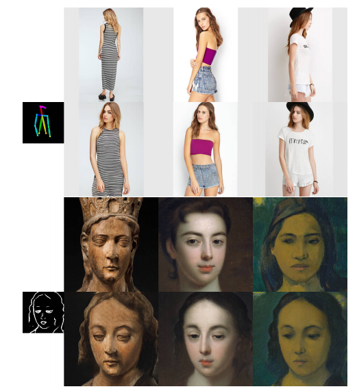
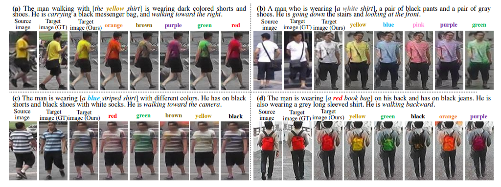
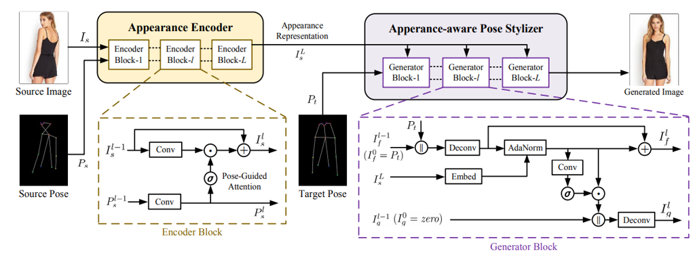

Xingran Zhou 周星然
Ph.D. student
Zhejiang University, Hangzhou City, P.R.China
Email: xingranzh AT zju.edu.cn
Biography
Xingran Zhou is a Ph.D. student at Zhejiang University, Hangzhou City, China. He is under the supervision of Professor Zhongfei Zhang.
His research interests focus on the intersection of Computer Vision and Computer Graphics. He is particularly interested in learning-based models for generating appealing visuals.
He is doing a research internship in Microsoft Research – Asia (MSRA) from July 2019.
LinkedIn Page: https://www.linkedin.com/in/xingranzh/
Publication
|  |
Full-Resolution Correspondence Learning for Image TranslationXingran Zhou, Bo Zhang, Ting Zhang, Pan Zhang, Jianmin Bao, Dong Chen, Zhongfei Zhang, Fang Wen
CVPR 2021, oral presentation,
[Code]
[arXiv]
[pdf]
[BibTex]
|
|  |
Text Guided Person Image SynthesisXingran Zhou, Siyu Huang, Yingming Li, Bin Li, Jiachen Li, Zhongfei Zhang CVPR 2019 (acceptance rate 25.2%) We present a novel method to manipulate the visual appearance (pose and attribute) of a person image according to natural language descriptions. |
|  |
Generating Person Images with Appearance-aware Pose StylizerSiyu Huang, Haoyi Xiong, Zhi-Qi Cheng, Qingzhong Wang, Xingran Zhou, Bihan Wen, Jun Huan, Dejing Dou International Joint Conference on Artificial Intelligence (IJCAI), 2020 (acceptance rate 12.6%) We present a novel generator called Appearance-aware Pose Stylizer (APS) which generates human images by coupling the target pose with the conditioned person appearance progressively. |